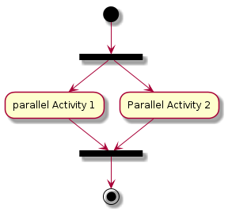
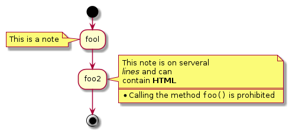

使用Emacs敲出UML，PlantUML快速指南
Table of Contents
前言
本文多数内容引用自官网文档，并非本人原创，也谈不上翻译，只是把自己 理解的东西用中文写出来。
编写本文的目的旨在记录个人在学习PlantUML时对官网上一些内容的理解，以 及总结学习过程中遇到的问题，并将其分享。文章中如有不对之处欢迎大家直 言指正，以免造成误导。
版权：本文可自由转载，但不能商用，不能衍生，保持署名。转载请注明作者及出处.
Creative Commons Attribution-NonCommercial-NoDerivatives 4.0 International License.
什么是PlantUML
PlantUML是一个快速创建UML图形的组件，官网上之所以称它是一个组件，我 想主要是因为多数情况下我们都是在Eclipse、NetBenas、Intellijidea、 Emacs、Word等软件里来使用PlantUML（参看各软件相关配置）。
- PlantUML支持的图形有：
- sequence diagram,
- use case diagram,
- class diagram,
- activity diagram (here is the new syntax),
- component diagram,
- state diagram,
- object diagram,
- wireframe graphical interface
PlantUML通过简单和直观的语言来定义图形，它可以生成PNG、SVG和二进制 图片。下面是一个简单的示例：
#+BEGIN_SRC plantuml :file ../img/orgmode-babel-sequenceuml.png Alice -> Bob: synchronous call Alice ->> Bob: asynchronous call #+END_SRC

在官网上有一个简单的在线Demo服务， 有兴趣的朋友可以上去看下。
在Emacs里配置PlantUML（参考：Run it from Emacs）
- 下载
plantuml.jar到你的硬盘上（官网下载页面） 安装生成图片用的软件Graphviz
## 如果是Ubuntu系统，可以直接运行下面的命令安装 sudo apt-get install graphviz
在
.emacs里添加配置，把plantuml添加到org-babel-load-languages加载语言列表里。;; active Org-babel languages (org-babel-do-load-languages 'org-babel-load-languages '(;; other Babel languages (plantuml . t)))
然后把刚下载到的
plantuml.jar文件的存放路径也添加到.emacs文件中，以方便Emacs调用。(setq org-plantuml-jar-path (expand-file-name "~/path/to/plantuml.jar"))
重启Emacs，复制上面的示例代码试一下吧！
其他软件里的PlantUML下载和安装
如何使用
- 顺序图（Sequence Diagram）
- 简单示例
顺序图用
->,-->,<-,<--来绘制参与者（Participants）之 间的消息（Message）。#+BEGIN_SRC plantuml :file ../img/plantuml-quickstart-s1.png Alice -> Bob: Authentication Request Bob --> Alice: Authentication Response Alice -> Bob: Another atuhentication Request Alice <-- Bob: Another authentication Response #+END_SRC
- 注释语句
以单引号开始头行，即是一个单行注释。多行注释可以使用"'"表 示注释内容的开始，然后使用"'"来表示注释内容的结束。
- 申明参与者
申明参与者，可以使用
participant关键词，也可以使用下面的参与者 分类关键词来申明参与者：- actor
- boundary
- control
- entity
- database
不同的参与者类型，其图标也是不一样的。
#+BEGIN_SRC plantuml :file ../img/plantuml-quickstart-s2.png actor Foo1 boundary Foo2 control Foo3 entity Foo4 database Foo5 Foo1 -> Foo2 : To boundary Foo1 -> Foo3 : To control Foo1 -> Foo4 : To entity Foo1 -> Foo5 : To database #+END_SRC
使用
as关键词可以为参与者起一个别名，这样在对引用长名的参与者时， 会方便很多。在参与者申明语句后行尾可以追加背景色的设置，只要把标准 的HTML颜色值 写在后面就行了。#+BEGIN_SRC plantuml :file ../img/plantuml-quickstart-s3.png actor Bob #red ' The only defference between actor ' and participant is the drawing participant Alice participant "I have a really\nlong name" as L #99ff99 /' You can also declare: participant L as "I have a really\nlong name" #99ff99 '/ Alice -> Bob: Authentication Request Bob -> Alice: Authentication Response Bob -> L: Log transaction #+END_SRC - 使用非字母的参与者名称（Use non-letters in participants）
针对非字母的参与者名，我们可以使用双引号，同样也可以为比较长的名字 起个别名，方法同上使用
as关键词。使用上面的关键词来申明参与者，是一种显示申明；而采用引号来申明参与 者则是一种隐示申明方法，它不需要专门的位置去定义。
#+BEGIN_SRC plantuml :file ../img/plantuml-quickstart-s4.png Alice -> "Bob()" : Hello "Bob()" -> "This is very\nlong" as Long ' You can also declare: ' "Bob()" -> Long as "This is very\nlong" Long --> "Bob()" : ok #+END_SRC
- 发送消息给自己（Message to Self）
一个参与者可以给自己发送消息，消息名如果需要有多行文本，可以用
\n来表示换行。#+BEGIN_SRC plantuml :file ../img/plantuml-quickstart-s5.png Alice -> Alice: This is a signal to self.\nIt also demonstrates\nmultiline \ntext #+END_SRC
- 改变箭头的样式（Change arrow style）
在用例图里可以通过以下方式来改变箭头的样式：
- 使用
\或/来替换<或>可以让箭头只显示上半部分或下半 部分。 - 重复输入箭头或斜杠（
>>//），用来绘制空心箭头。 - 使用双横线
--替代-可以用来绘制点线。 - 在箭头后面加个
o可以在箭头前绘制一个圆圈。 - 使用
<->可用来绘制双向箭头。
#+BEGIN_SRC plantuml :file ../img/plantuml-quickstart-s6.png Bob -> Alice Bob ->> Alice Bob -\ Alice Bob \\- Alice Bob //-- Alice Bob ->o Alice Bob o\\-- Alice Bob <-> Alice Bob <<-\\o Alice #+END_SRC
- 使用
- 改变箭头的颜色（Change arrow color）
要改变箭头的颜色，可以使用HTML颜色符号，参看下面的例子：
#+BEGIN_SRC plantuml :file ../img/plantuml-quickstart-s7.png Bob -[#red]> Alice : hello Alice -[#0000FF]->Bob : ok #+END_SRC
- 消息序号（Message sequence numbering）
关键词
autonumber用来给自动的给消息添加上序号。#+BEGIN_SRC plantuml :file ../img/plantuml-quickstart-s8.png autonumber Bob -> Alice : Authentication Request Bob <- Alice : Authentication Response #+END_SRC
如果需要指定一个起始号码，可以直接在
autonumber后面加个数字就行 了，如果要设置自增量，再在后面加一个数字就行了（autonumber start increment）。#+BEGIN_SRC plantuml :file ../img/plantuml-quickstart-s9.png autonumber Bob -> Alice : Authentication Request Bob <- Alice : Authentication Response autonumber 15 Bob -> Alice : Another authentication Request Bob <- Alice : Another authentication Response autonumber 40 10 Bob -> Alice : Yet another authentication Request Bob <- Alice : Yet another authentication Response #+END_SRC
我们也可以为序号指定数字格式，这个格式化的过程实际上是Java类
DecimalFormat来执行的（0表示数字，#缺省补零位数）。同样的，也可以使用一些HTML标签来控制数字的样式。
#+BEGIN_SRC plantuml :file ../img/plantuml-quickstart-s10.png autonumber "<b>[000]" Bob -> Alice : Authentication Request Bob <- Alice : Authentication Response autonumber 15 "<b>(<u>##</u>)" Bob -> Alice : Another authentication Request Bob <- Alice : Another authentication Response autonumber 40 10 "<font color=red>Message 0 " Bob -> Alice : Yet another authentication Request Bob <- Alice : Yet another authentication Response #+END_SRC
- 标题（Title）
要给图形加一个标题可以用
title关键词来设置。#+BEGIN_SRC plantuml :file ../img/plantuml-quickstart-s11.png title Simple Comunication example Alice -> Bob : Authentication Request Bob --> Alice : Authentication Response #+END_SRC
- 图形图例（Legend the diagram）
使用
legend和end legend关键词可以设置图形的图例。图例可以设 为左对齐、右对齐和居中对齐。#+BEGIN_SRC plantuml :file ../img/plantuml-quickstart-s12.png Alice -> Bob : Hello legend right Short legend endlegend #+END_SRC
- 分割图形（Splitting diagrams）
关键词
newpage是用来把图形分割成几个图片的。每一个被分割出来的 图片可以看作是一个新的页面（new page），如果要给新的页面添加一 个标题，可以紧跟在关键词newpage之后来设置。使用这个方法可以方便的在Word里把比较长的图形分别打印到几个不同的页 面上（有点分页符的概念）。
#+BEGIN_SRC plantuml :file ../img/plantuml-quickstart-s13.png Bliss -> Tia : I love you Bliss -> Tia : I miss you newpage Bliss -> Tia : Let's go home Bliss -> Tia : Quick newpage A title for the\nlast page Tia -> Bliss : Give me money Tia -> Bliss : No money No love #+END_SRC
- 消息分组（Grouping message）
有时候可能需要对消息进行分组，那么可以使用下面的关键词来实现：
- alt/else
- opt
- loop
- par
- break
- critical
- group, 这个关键词后面的文字会作为组名显示在图形上
上面的关键词后可以添加一些文本用来显示在头部（注：
group除外，因 为它后面的文本用来显示在组名称的位置）。在组嵌套组的结构里可以用关 键词end来关闭组或者说是表示一个组符号的结束符（类似if/endif）。#+BEGIN_SRC plantuml :file ../img/plantuml-quickstart-s14.png Alice -> Bob: Authentication Request alt successful case Bob -> Alice: Authentication Accepted else some kind of failure Bob -> Alice: Atuhentication Failue group My own label Alice -> Log : Log attack start loop 1000 times Alice -> Bob: DNS Attack end Alice -> Log : Loag alice end end else Another type of failue Bob -> Alice: Please repeat end #+END_SRC - 消息注解（Notes on messages）
我们可能经常会在消息的左边或右边使用注解，要添加注解，只要使用
note left或note right关键词就可以了。#+BEGIN_SRC plantuml :file ../img/plantuml-quickstart-s15.png Alice -> Bob : hello note left: this is a first note Bob -> Alice : ok note right: this is anther note Bob -> Bob : I am thinking note left a note can also be defined on several lines end note #+END_SRC - 一些其他的注解方式（Some other notes）
通过使用关键词
note left of，note right of或note over， 我们还可以把注解放置在与之相关的参与者的左边或右边，或下方。通过改变注解的背景色，我们还可以高亮一个注解文本块。
如果要使用多行注解，可以使用关键词
end note来表示注解的结束。#+BEGIN_SRC plantuml :file ../img/plantuml-quickstart-s16.png participant Alice participant Bob note left of Alice #aqua This is displayed left of Alice. end note note right of Alice: This is displayed right of Alice. note over Alice: This displayed over Alice. note over Alice, Bob #FFAAAA: This is displayed\n over Bob and Alice. note over Bob, Alice This is yet another example of a long note. end note #+END_SRC - 使用HTML进行格式化（Formatting using HTML）
我们可以使用少量的HTML标签来格式化文本：
<b>加粗文本<u>或<u:#AAAAAA>或<u:colorName>用来加下划线<i>斜体<s>或<s:#AAAAAA>或<s:colorName>用来加删除线<w>或<w:#AAAAAA>或<w:colorName>用来加波浪线<color:#AAAAAA>或<color:colorName>用来设置文本颜色<back:#AAAAAA>或<back:colorName>用来设置背景色<size:nn>设置字体大小<img src="file">或<img:file>用来添加图片，图片文件必须 是可以访问得到才行。<img src="http://url">或<img:http://url>用来添加一个互 联网图片，同样的图片地址必须是可用的才行。
#+BEGIN_SRC plantuml :file ../img/plantuml-quickstart-s17.png participant Alice participant "The <b>Famous</b> Bob" as Bob Alice -> Bob : A <i>well formated</i> message note right of Alice This is <back:cadetblue><size:18>displayed</size></back> <u>left of</u> Alice. end note note left of Bob <u:red>This</u> is <color #118888>displayed</color> <b><color purple>left of</color> <s:red>Alice</strike> Bob</b> end note note over Alice, Bob <w:#FF33FF>This is hosted</w> by <img ../img/code.png> end note #+END_SRC
- 简单示例
- 用例图（Use Case Diagram）
- 用例（Usecase）
用例可以用一对小括号括起来表示，也可以使用
usecase关键词来定义。 用例也可以通过使用as关键词来设置别名，在建立关系的时候可以使用 别名。#+BEGIN_SRC plantuml :file ../img/plantuml-quickstart-u1.png @startuml (Usecase One) (Usecase Two) as (UC2) usecase UC3 usecase (Last\nusecase) as UC4 @enduml #+END_SRC
- 参与者（Actors）
定义参与者时，可以把参与者的名称放在两个冒号的中间，也可以用
actor关键词来定义参与者。同样参与着也可以使用别名。#+BEGIN_SRC plantuml :file ../img/plantuml-quickstart-u2.png @startuml :Actor 1: :Another\nactor: as Men2 actor Men3 actor :Last actor: as Men4 @enduml #+END_SRC
- 示例
#+BEGIN_SRC plantuml :file ../img/plantuml-quickstart-u99.png left to right direction skinparam packageStyle rect actor customer actor clerk rectangle checkout { customer -- (checkout) (checkout) .> (payment) : include (help) .> (checkout) : extends (checkout) -- clerk } #+END_SRC
- 用例（Usecase）
- 类图（Class Diagram）
- 示例1
class Company { } class Department { name : Name } class Office { address : String phone : Number } class Headquarters { } class Person { name : Name employeeID : Integer title : String getPhoto() : Photo getPhone() : Number getContactInformation() : ContactInformation getPersonalRecords() : PersonnelRecord } class ContactInformation { address : String } class PersonnelRecord { taxID employmentHistory salary } Company "1" *-do- "1..*" Department Company "1" *-do- "1..*" Office '(Department, Office) -up-* Company Department "*" -ri- "*" Office : Location > Department "*" --* "0..1" Department Office <|-do- Headquarters Department "*" -do- "member 1..*" Person Person "1 {subsets member}" -u- "*" Department : manager Person .ri.> ContactInformation Person ..> PersonnelRecord PersonnelRecord -() ISecureInformation
- 示例1
- 活动图（Activity Diagram）
- 简单活动（Simple Activity）
在活动图中，你可以使用
(*)来表示活动开始点和结束点。使用-->来表示箭头。#+BEGIN_SRC plantuml :file ../img/plantuml-quickstart-a1.png (*) --> "First Activity" "First Activity" --> (*) #+END_SRC
- 带标注的箭头（Label on arrows）
缺省情况下，活动图的箭头是没有标注的。但我们可以通过方括号
[labels]来设置标注，只要把它放在箭头定义的后面就可以了。#+BEGIN_SRC plantuml :file ../img/plantuml-quickstart-a2.png (*) --> "First Activity" -->[You can put also labels] "Second Activity" -->(*) #+END_SRC
- 改变箭头的方向（Changing arrow direction）
我们可以使用
->创建一个水平箭头，也可以通过下面的方式来改变箭头 的方向：-down->向下（这个是默认的，等同于 =–>=）-right->向右-left->向左-up->向上
#+BEGIN_SRC plantuml :file ../img/plantuml-quickstart-a3.png (*) --> "1" -right-> "2" -down-> "3" -left-> "4" -le-> "5" -up-> "6" -l-> "7" -do-> "8" -d-> "9" -> "10" --> (*) #+END_SRC
在描述箭头时，
up|down|left|right这几个单词的写法可以简化， 用单词开头的一个或两个字母来替换就行了，比如-down->也可以写成-d->或者-do->。 - 分支（Branches）
在PlantUML里，我们可以使用
if/then/else关键词来定义分支。#+BEGIN_SRC plantuml :file ../img/plantuml-quickstart-a4.png (*) --> "Initialisation" if " Some Test" then -->[ture] "Some Activity" --> "Another Activity" -right-> (*) else ->[false] "Something else" -->[Ending process] (*) endif #+END_SRC - 多分支（More on Branches）
直接给例子：
#+BEGIN_SRC plantuml :file ../img/plantuml-quickstart-a5.png (*) --> if "Some Test" then -->[true] "1" if "" then -> "3" as a3 else if "Other test" then -left-> "5" --> (*) else --> "6" --> (*) endif endif else ->[false] "2" --> (*) endif a3 --> if "last test" then --> "7" --> (*) else -> "8" --> (*) endif #+END_SRC - 同步块（Synchronization）
同步块可以用“=== code ===”来表示。
#+BEGIN_SRC plantuml :file ../img/plantuml-quickstart-a6.png (*) --> ===B1=== --> "parallel Activity 1" --> ===B2=== ===B1=== --> "Parallel Activity 2" --> ===B2=== --> (*) #+END_SRC

一个小实例
#+BEGIN_SRC plantuml :file ../img/plantuml-quickstart-a7.png (*) --> "Select site" --> "Commission architect" --> "Develop plan" --> "Bid plan" as bp if "" then -->[else] ===B1=== --> "Do site work" --> ===B2=== ===B1=== --> "Do trade work" --> ===B2=== --> "Finish construction" --> (*) else -u->[not accepted] bp endif #+END_SRC - 长文本的活动描述（Long activity description）
在定义活动的时候，有时候需要用多行文字来描述这个活动，这时我们可以 在描述里添加换行符
\n，也可以使用少量的HTML标签。以下是可以使用的HTML标签：
<b> <i> <font size="nn"> or <size:nn> to change font size <font color="#AAAAAA"> or <font color="colorName"> <color:#AAAAAA> or <color:colorName> <img:file.png> to include an image
针对较长文本描述活动，可以起一个较短别名（如："long text" as A1）， 在图形定义脚本中可以直接使用别名，参看下面的例子中的A1。
1: #+BEGIN_SRC plantuml :file ../img/plantuml-quickstart-a8.png 2: (*) -l-> "this <size:20>activity</size> 3: is <b>very</b> <color:red>long</color> 4: and defined on serveral lines 5: that contains many <i>text</i>" as A1 6: -up-> "Another activity\n on serveral lines" 7: 8: A1 --> "Short activity\n<img:../img/code.png>" 9: #+END_SRC
- 注释（Notes）
PlantUML可以通过在脚本里使用
note来添加注释文本块。note commands:
- note left
- note right
- note top
- note bottom
PlantUML用上面列表里的命令来标注一个注释块的开始，然后用
end note来标注注释块的结束。同时note命令也允许使用单行定义一个文本块， 详见下面的例子。#+BEGIN_SRC plantuml :file ../img/plantuml-quickstart-a9.png (*) --> "Some Activity" as s note right: This activity has to be defined s --> (*) note left This note is on serveral lines end note #+END_SRC - 分区（Partition）
通过分区关键词
partition可以定义一个分区，并且可以使用HTML的 颜色码或颜色名来设置分区的背景色。在你申明一个活动时，PlantUML会自动 的把这个活动对象放置到最后使用的分区中。当然，也可以使用end partitio关闭分区定义。#+BEGIN_SRC plantuml :file ../img/plantuml-quickstart-a10.png partition Conductor (*) --> "Climbs on Platform" --> === S1 === --> Bows end partition partition Aduience #LightSkyBlue === S1 === --> Applauds partition Conductor Bows --> === S2 === --> WavesArmes Applauds --> === S2 === end partition partition Orchestra #CCCCEE WavesArmes --> Introduction --> "Play music" end partition #+END_SRC
- 图形标题（Title the diagram）
标题关键词
title用来设置一个图形的标题文本，我们可以在title和end title两个关键词之间放置比较长的标题文本。#+BEGIN_SRC plantuml :file ../img/plantuml-quickstart-a11.png title Simple example\nof title (*) --> "First activity" --> (*) #+END_SRC
- 皮肤（Skinparam）
皮肤命令
skinparam可以改变图形的颜色和字体。这些命令可以在以下 的位置中使用：- 在图形定义里使用，
- 在包含的文件里使用，
- 在一个配置文件里使用，这个配置文件一般由命令行或ANT的Task来提供。
#+BEGIN_SRC plantuml :file ../img/plantuml-quickstart-a12.png skinparam backgroundColor #AAFFFF skinparam activityStartColor red skinparam activityBarColor SaddleBrown skinparam activityEndColor Silver skinparam activityBackgroundColor Peru skinparam activityBorderColor Peru skinparam activityFontName Impact skinparam activityShape octagon (*) --> "Climbs on Platform" --> === S1 === --> Bows --> === S2 === --> WavesArmes --> (*) #+END_SRC
使用
skinparam activityShape octagon命令可以把活动图形改成八角 形的。(好像没效果！) - 完整示例（Complete Example）
#+BEGIN_SRC plantuml :file ../img/plantuml-quickstart-a13.png 'http://click.sourceforge.net/images/activity-diagram-small.png title Servlet Container (*) --> "ClickServlet.handleRequest()" --> "new Page" if "Page.onSecurityCheck" then ->[true] "Page.onInit()" if "isForward?" then ->[no] "Process controls" if "continue processing?" then -->[yes] ===RENDERING=== else -->[no] ===REDIRECT_CHECK=== endif else -->[yes] ===RENDERING=== endif if "is Post?" then -->[yes] "Page.onPost()" --> "Page.onRender()" as render --> ===REDIRECT_CHECK=== else -->[no] "Page.onGet()" --> render endif else -->[false] ===REDIRECT_CHECK=== endif if "Do redirect?" then ->[yes] "redirect request" --> ==BEFORE_DESTORY=== else if "Do Forward?" then -left->[yes] "Forward request" --> ==BEFORE_DESTORY=== else -right->[no] "Render page template" --> ==BEFORE_DESTORY=== endif endif --> "Page.onDestory()" -->(*) #+END_SRC
- 简单活动（Simple Activity）
- 活动图Beta
Beta版本的活动图简化了活动图的符号定义，从
V7947这个版本开始， PlantUML就开始引入了一些简化写法，当然到目前（20140627）为止还不是 很完善，但这个版本里的一些简化写法已经是PlantUML后续版本的发展方向。下文中将会用几个简单的示例来介绍Beta版活动图的新功能，有兴趣的朋友 也可以试一下，在使用新的写法之前需要把
GraphViz更新到最新版本。关于更多的PlantUML版本更新信息可以参考官网页面（What's New？）
- 简单活动（Simple Activity）
在这个例子里，活动元素从一个
:开始，然后到一个;结束。 开始和结束符号，可以用start和end两个关键词来表示。之前版 本的开始和结束符都是用同一个符号(*)来表示的，个人觉得新的写法 逻辑更清晰，代码可读性更高。至于更多的文本格式，大家可以参考：Creole engine
#+BEGIN_SRC plantuml :file ../img/plantuml-quickstart-ab1.png start :Hello world; :This is on defined on serveral **lines**; stop #+END_SRC
- 条件符号（Conditional）
和之前一样，还是使用
if，then和else关键词，但分支条件的 标签Labels可以直接写在关键词then和else的后面，并用小括 号括起来就可以了（如：(Labels)）。#+BEGIN_SRC plantuml :file ../img/plantuml-quickstart-ab2.png start if (graphviz installed?) then (yes) :process all\ndiagrams; else (no) :process only __sequence__ and __activity__ diagrams; endif stop #+END_SRC在新版本里除了使用
else外，还新加了一个elseif关键词，有了这 个语法，我们就可以绘制一系列条件的活动图。#+BEGIN_SRC plantuml :file ../img/plantuml-quickstart-ab3.png start if (condition A) then (yes) :Text1; elseif (condition B) then (yes) :Text2; stop elseif (condition C) then (yes) :Text 3; elseif (condition D) then (yes) :Text 4; else (nothing) :Text else; endif stop #+END_SRC - 重复循环（Repeat Loop）
通过
repeat和repeat while关键词可以创建循环结构的图形。#+BEGIN_SRC plantuml :file ../img/plantuml-quickstart-ab4.png start repeat :read data; :generate diagrams; repeat while (more data?) stop #+END_SRC - 条件循环（While Loop）
“条件循环”和上面的“重复循环”不太一样，上面的“重复循环”是先执行一次 循环体里的内容，然后再执行断言条件，看是否重复执行循环体；而条件循 环则将断言放到了最前面，因此它是先判断是否满足条件再执行循环体里的 内容。
要创建条件循环结构的图形可以通过使用
while和end while两个关 键词来实现。如果要给条件分支加上标注，可以在while条件后加上一 个is关键词，然后用小括号括上要标注的内容；在end while后可 以直接用小括号括上要标注的内容。#+BEGIN_SRC plantuml :file ../img/plantuml-quickstart-ab5.png start while (data available?) is (not empty) :read data; :generate diagrams; end while (empty) stop #+END_SRC - 并行处理（Parallel Processing）
fork，fork again和end fork三个关键词用来表示并行处理结 构。#+BEGIN_SRC plantuml :file ../img/plantuml-quickstart-ab6.png start if (multiprocessor?) then (yes) fork :Treatment 1; fork again :Treatment 2; end fork else (monoproc) :Treatment 1; :Treatment 2; endif stop #+END_SRC - 注解的文本样式（Notes）
注解里的文本样式是通过 Creole wiki syntax 来实现的。关于Creole引擎, 大家可以参考维基百科上的介绍。
#+BEGIN_SRC plantuml :file ../img/plantuml-quickstart-ab7.png start :fool; note left: This is a note :foo2; note right This note is on serveral //lines// and can contain <b>HTML</b> ==== * Calling the method ""foo()"" is prohibited end note stop #+END_SRC
- 颜色（Color）
为活动元素指定背景色可以直接在活动开始标记
:前加上颜色描述符：#+BEGIN_SRC plantuml :file ../img/plantuml-quickstart-ab8.png start #purple:starting progress; :reading configuration files These files must do be edited at this point; #00AAAA:ending of the process; stop #+END_SRC
- 完整示例（Complete Example）
#+BEGIN_SRC plantuml :file ../img/plantuml-quickstart-ab9.png start :ClickServlet.handleRequest(); :new page; if (Page.onSecurityCheck) then (true) :(Page.onInit(); if (isForward?) then (no) :Process controls; if (continue processing?) then (no) stop endif if (isPost?) then (yes) :Page.onPost(); else (no) :Page.onGet(); endif :Page.onRender(); endif else (false) endif if (do redirect?) then (yes) :redirect process; else if (do forward?) then (yes) :Forward request; else (no) :Render page template; endif endif stop #+END_SRC
- 简单活动（Simple Activity）